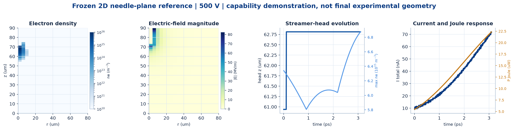
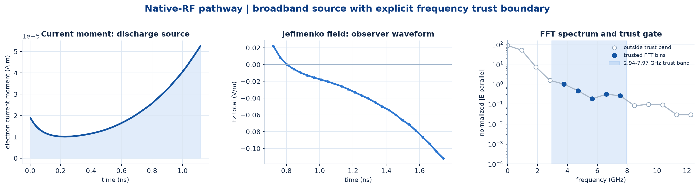
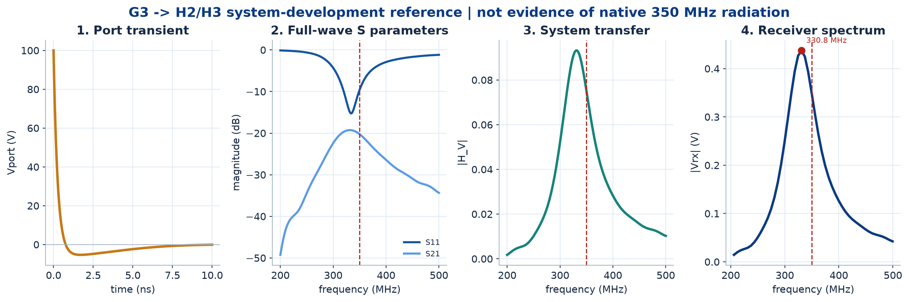
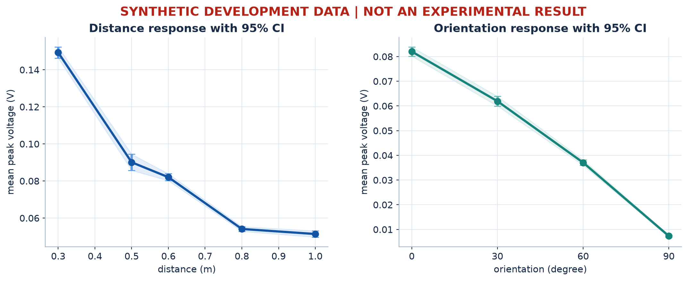

微间隙击穿放电多物理仿真工具链构建
从电极结构到无线接收的正式仿真与验证平台
| 工作包 | 研究问题 | 平台提供的量 | 形成的论文证据 |
|---|---|---|---|
| WP1 几何矩阵 | 针尖曲率、箔片结构、间隙和对准如何改变稳定性？ | Emax、高场区、流注头、路径、桥接时序、电流 | 几何参数 → 起始条件 → 放电发展 → 稳定性 |
| WP2 材料/界面 | 材料、涂层和表面状态如何影响寿命与可读性？ | 材料条件分组、界面参数、current/Joule、实验重复性 | 界面变化 → 能量沉积/退化 → 信号稳定性 |
| WP3 分层机制 | 不同放电阶段和等效阻尼如何塑造频谱？ | 原生RF、thermal/RLC、端口谱、机制归因 | 源时间尺度与系统选频作用分离 |
| WP4 链路排除 | 接收端变化如何与发射端变化分离？ | S11/S21、传递函数、距离/方向、接收器响应 | 发射端结构效应与传播/接收效应分离 |




| 研究方向 | 直接复用的能力 | 可回答的问题 |
|---|---|---|
| 子方向2 宽频同步表征与接收链路 | 原生RF、S参数、系统传递、接收器、实验验证 | 不同频段来自放电源还是传播/接收链？宽频同步测量应如何解释？ |
| 子方向3 多特征解码与距离补偿 | 传播、距离/方向、重复性、不确定度分析 | 哪些特征对距离最敏感？如何利用传播状态进行补偿？ |
| 子方向4 多模态气体放电EM指纹 | 二维/三维流注、current moment、原生RF、验证框架 | 不同放电模式的电流、时间尺度与EM频谱有何差异？ |
| 子方向5 神经触觉或系统级应用 | thermal/RLC、全波传播、接收与验证 | 端到端系统能否稳定输出可用信息？哪些环节限制鲁棒性？ |
| 科研模块 | 辅助Stage | 计算后端 | 主要输出 | 当前状态 |
|---|---|---|---|---|
| 实际电极静电场 | B | COMSOL（外部） | 电势、E场、Emax、高场区 | 接口明确；正式微电极工作独立推进 |
| 二维流注与电流 | C | PETSc / MPI | 粒子密度、空间电荷、流注头、电流、Joule | 框架可用；待正式结构矩阵 |
| 三维流注 | D/E | Afivo（外部） | 非轴对称场与流注演化 | 接口与关键工况流程已建立 |
| 原生RF | F | Jefimenko后处理 | current moment、时域场、FFT、可信带 | 分析链建立；350 MHz未解决 |
| 热通道与端口 | G | thermal / RLC | 通道电阻、Vport、Iport、端口谱 | 开发参考链可用 |
| 全波传播与接收 | H | openEMS（外部） | S11、S21、传递函数、接收波形/频谱 | 开发参考；绝对幅值仅数值参考 |
| 实验验证 | I | 验证与统计模块 | 频谱、重复性、CI、不确定度、差异记录 | 流程就绪；真实实验待提供 |
决定局部场和边界条件。
决定雪崩、流注和电流分辨率。
用于区分发射端与接收链影响。
缺少元数据时不能完成正式科学验证。
| 对象 | 软件 / 工具状态 | 当前科学状态 |
|---|---|---|
| 整体仿真与验证平台 | microgap-rf v0.1.0 已发布 | 不等同于全部物理结论已验证 |
| Stage-I实验验证 | 数据、质量、比较与不确定度流程就绪 | PENDING_REAL_EXPERIMENT |
| 350 MHz系统 | 开发参考链可运行 | SYSTEM_350MHZ_VALIDATION = NOT_MEASURED |
| 350 MHz原生RF | 原生RF分析链可运行 | NATIVE_RF_350MHZ = NOT_RESOLVED |
| Stage5全Maxwell参考 | 接收后处理接口就绪 | FULL_MAXWELL_REFERENCE_PENDING |
| H4接收绝对幅值 | 可形成数值接收参考 | NUMERICAL_REFERENCE_ONLY |